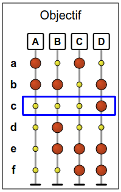
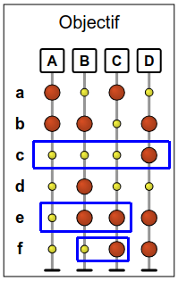
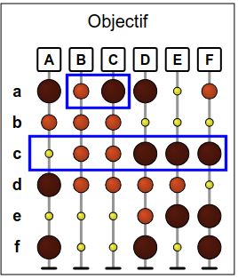
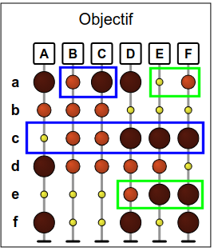
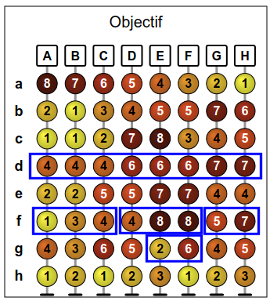

Solution
Rappelons l'astuce indiquée dans le sujet : la solution se trouve plus facilement en étudiant uniquement les boules de l'objectif.
La dernière étape de tri doit placer des petites boules à gauche et des grandes boules à droite. La dernière étape doit donc être c, e, ou f. Supposons par exemple que c soit la dernière étape.

Ainsi, la tige D sera placée tout à gauche. Il faudra aux étapes précédentes s'assurer que les tiges A, B, et C soient triées dans le bon ordre. Par exemple, on peut s'assurer que la tige A soit à gauche en triant la ligne e à l'avant-dernière étape.

Pour ce qui est de placer la tige B à gauche de la tige C, on peut pour cela commencer par trier selon la ligne f.

En résumé, une solution consiste à trier les lignes f, e, c (dans cet ordre).
Il y avait de nombreuses autres solutions, par exemple b, f, e, ou d, c, f, ou encore e, c, f, etc...
Rappelons l'astuce indiquée dans le sujet : la solution se trouve plus facilement en étudiant uniquement les boules de l'objectif.
La dernière étape de tri doit ranger les boules des plus petites à gauches aux plus grandes à droite. La dernière étape doit donc être un tri de la ligne c ou bien de la ligne e. Supposons par exemple que c soit la dernière étape.

Ainsi, la tige A sera placée tout à droite. Il faudra aux étapes précédentes s'assurer d'une part que la tige B soit à gauche de la tige C, et d'autre part que les tiges D, E et F soit placés dans le bon ordre.
Pour placer B à gauche de C, il n'y a qu'une seule possibilité, c'est de trier selon la ligne a à un moment avant la dernière étape.

Il reste à mettre les tiges D, E et F dans le bon ordre. La ligne e est la seule qui permet de placer la tige D à gauche de la tige E. Pour ce qui est de placer la tige E à gauche de la tige F, cela peut être fait au préalable par le tri de la ligne a, que l'on a déjà prévu d'effectuer.

En résumé, une solution consiste à trier les lignes a, e, c (dans cet ordre).
Il y avait une autre solution : si l'on choisit de terminer par la ligne e, en appliquant un raisonnement similaire, on trouve la solution a, c, e.
Rappelons l'astuce indiquée dans le sujet : la solution se trouve plus facilement en étudiant uniquement les boules de l'objectif.
La dernière étape de tri doit ranger les boules dans l'ordre croissant des numéros. La dernière étape est donc forcément un tri de la ligne d.

Le tri de la ligne d va ranger les tiges selon 3 groupes : un groupe à gauche formé des tiges A, B et C, un groupe au milieu formé des tiges D, E et F, et un groupe à droite formé des tiges G et H. En revanche, à l'intérieur de chaque groupe, les tiges ne seront pas forcément dans le bon ordre.
On peut mettre les tiges A, B et C dans le bon ordre en une seule étape, en triant à l'avant-dernière étape selon la ligne f. Trier selon cette ligne permet en même temps de placer les tiges G et H dans le bon ordre.

Il reste donc à trier le groupe du milieu, formé des tiges D, E et F. Le tri de la ligne f que l'on a prévu d'effectuer permet de placer D à gauche de E et F, comme on le souhaite. Par contre, il faut encore trouver un moyen de placer E à gauche de F. Si l'on compare les numéros sur les tiges E et F, on peut voir que la ligne g est la seule qui permette de placer E à gauche de F.

En résumé, la solution consiste à trier les lignes g, f, d (dans cet ordre).

C'est de l'informatique !